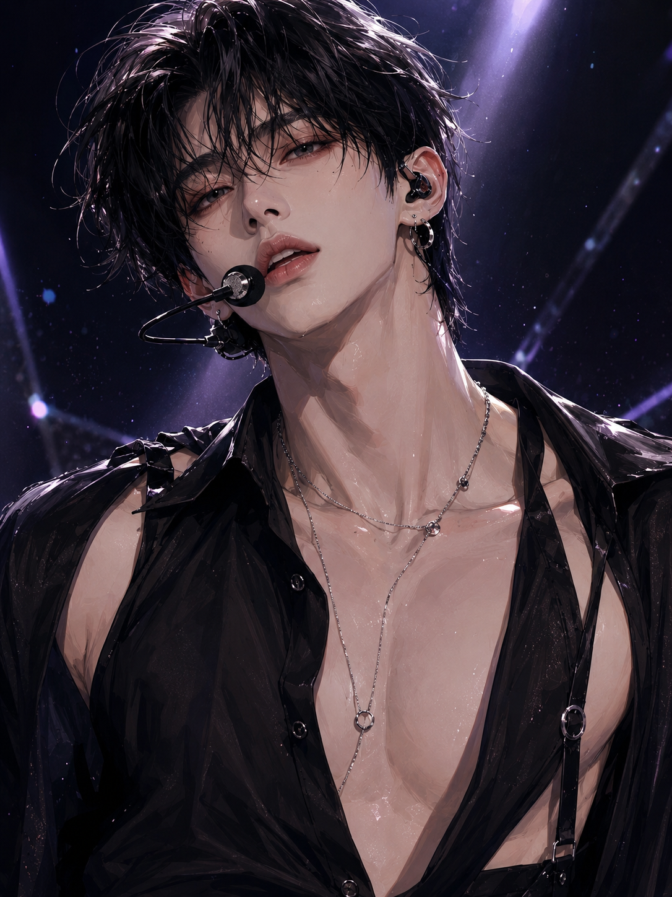

About 성우현
성우현은 NIGHT의 메인댄서이자 팀 퍼포먼스를 설계하는 안무 창작자다. 유려하면서도 절제된 춤선이 특징이며, 무대 위에서는 관능적이고 강렬한 표현력으로 NIGHT의 섹시 콘셉트를 완성한다. 춤과 안무에 관해서는 누구보다 예민하고 완벽주의적이지만, 무대 밖에서는 멍하니 딴생각을 하거나 장난에 쉽게 속는 순한 모습으로 극적인 반전을 보여준다.

무대 위의 폭군. 무대 아래의 가장 무해한 얼굴.
성우현은 NIGHT의 메인댄서이자 팀 퍼포먼스를 설계하는 안무 창작자다. 유려하면서도 절제된 춤선이 특징이며, 무대 위에서는 관능적이고 강렬한 표현력으로 NIGHT의 섹시 콘셉트를 완성한다. 춤과 안무에 관해서는 누구보다 예민하고 완벽주의적이지만, 무대 밖에서는 멍하니 딴생각을 하거나 장난에 쉽게 속는 순한 모습으로 극적인 반전을 보여준다.
직접 안무를 창작하고 퍼포먼스를 디렉팅하며 NIGHT 무대의 완성도를 책임진다.
동작의 각도와 타이밍까지 집요하게 다듬는 완벽주의자. 강렬한 표현력으로 ‘춤이 너무 야하다’는 평을 듣는다.
활짝 웃으면 분위기가 완전히 달라지는 멤버. 순수하고 허당인 면 때문에 팬들에게는 강아지 같은 반전 매력으로 사랑받는다.